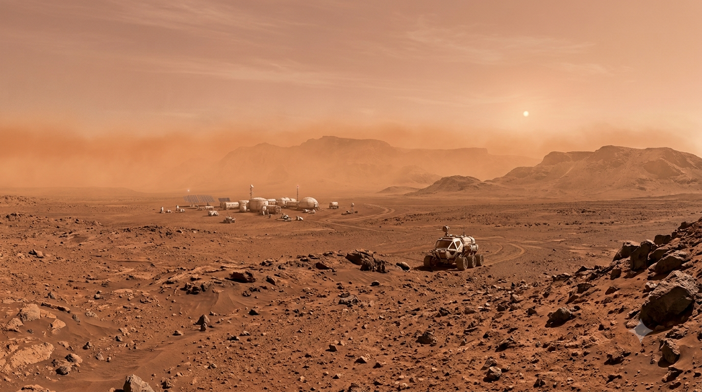
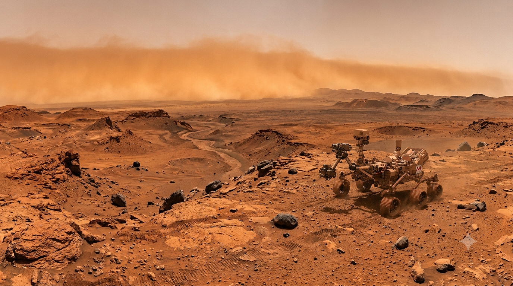
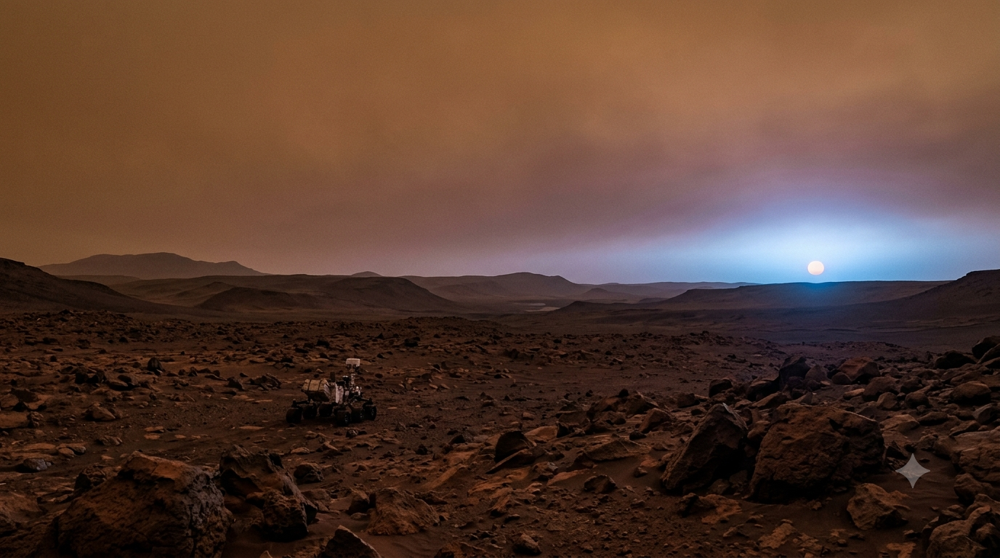
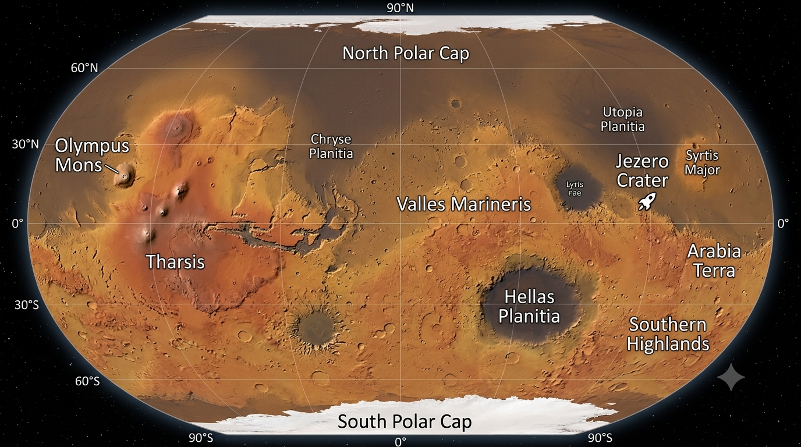
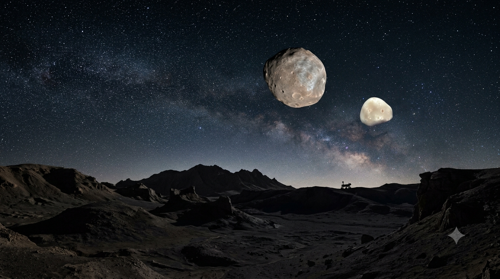

What Is Life Like on Mars? Weather, Water, Oxygen and More

Mars looks familiar from a distance: it has mountains, valleys, seasons, clouds, dust storms and a day only 39 minutes longer than Earth's. But its thin carbon-dioxide atmosphere, low pressure, cold surface, radiation and limited accessible water make it a harsh place for people. It is a scientific destination, not a second Earth.
This guide explains what Mars is really like and what humans would need to live there, from breathable air and water to food, shelter and protection.
So what would everyday life on Mars actually be like? Would you feel the cold immediately? Could you grow potatoes in the red soil? Would you see two moons at night? Could you walk outside in a normal jacket, drink water from the ground, or mine enough metal to build a town? The answers are a mix of amazing possibilities and very real engineering problems.
This guide explores Mars as it is known today: its weather, air, surface, nights, water, minerals, regions, two moons, and what people would need to survive there. Scientists have explored Mars with orbiters, landers, and rovers, but no human has ever stood on its surface. Some details of future living conditions therefore remain engineering questions, not things that have already been tested by astronauts on Mars.
- Mars at a glance
- Weather and dust storms
- Air and oxygen
- Temperature and nights
- Daylight, sunsets, and the sky
- What the surface is like
- Different parts of Mars
- Water: ice, ancient rivers, and lakes
- Is Martian soil fertile?
- Metals, minerals, and useful resources
- Could plants and crops grow?
- The two moons: Phobos and Deimos
- Gravity and moving around
- Radiation and the missing global magnetic field
- Could life already exist on Mars?
- What a human settlement would need
- So, what would life on Mars be like?
- Sources and further reading
Mars at a Glance
A few basic facts explain why Mars is both familiar and hostile.
| Feature | What we know | What it means for life |
|---|---|---|
| Length of a day | About 24 hours, 39 minutes, 35 seconds | A day-night routine is relatively easy to relate to, although a Mars day is a little longer. |
| Length of a year | About 687 Earth days | Seasons last much longer than Earth's seasons. |
| Gravity | About 38% of Earth's gravity | You would weigh less, but your body and equipment would still have mass and inertia. |
| Atmosphere | Mostly carbon dioxide, with nitrogen and argon; extremely thin | Unprotected people cannot breathe it, and it offers little pressure or insulation. |
| Average temperature | Roughly −60°C (−76°F), with wide local and seasonal variation | Heating and insulation are essential, even when a sunny afternoon looks inviting. |
| Water | Water ice is present, including beneath the surface and at the poles; ancient waterways are visible | Water is a resource to locate, extract, melt, and purify—not a guaranteed open stream. |
| Moons | Phobos and Deimos | The night sky can include two small, irregular moons rather than one large round moon. |
Mars is about half Earth's diameter, but its landscapes and conditions vary widely. A polar site, an equatorial plain and a high volcanic region would present different landing, temperature and resource challenges. NASA's Mars facts overview summarises the planet's main properties.
Weather on Mars: Wind, Dust, and Seasons
Mars has clouds, winds, dust devils and seasonal weather, but its atmosphere is extremely thin. Large dust storms can spread across regions and sometimes much of the planet, lasting for weeks or months. Dust reduces sunlight reaching solar panels, coats equipment and can interfere with seals, filters and moving parts.
Martian winds can move fine dust, but the thin air means they exert far less force than similarly fast winds on Earth. A dust storm is a serious visibility and maintenance problem, not an Earth-style hurricane capable of flattening buildings.

A Martian year lasts about 687 Earth days, so seasons last longer than ours. Seasonal sunlight helps influence dust activity. Thin water-ice clouds and frost occur, but ordinary rain and stable open-air lakes are not part of today's surface weather.
Can You Breathe on Mars? What About Oxygen?
No. Mars's atmosphere is about 95% carbon dioxide and its surface pressure is less than one percent of Earth's average. The tiny amount of oxygen present is nowhere near enough for human breathing. A filter mask or a small oxygen bottle would not solve the pressure problem: people need a pressurised suit that supplies breathable gas and controls temperature.
Could we make oxygen from Martian air?
NASA's MOXIE experiment on Perseverance demonstrated the principle by extracting oxygen from carbon dioxide. Across 16 runs, it produced 122 grams in total, reaching up to 12 grams per hour. That was a technology demonstration, not a system capable of supporting astronauts. A settlement would need much larger equipment, steady power, maintenance and backups. NASA's MOXIE mission summary describes the experiment.
Temperature: Warm Feet, Freezing Nights
Mars averages roughly −60°C (−76°F), although local temperatures vary with latitude, season, altitude and time of day. Sunlit ground near the equator can briefly rise above freezing, while polar winters can fall far below −100°C. The thin atmosphere stores and transfers little heat, so surfaces can warm in sunlight and cool rapidly after sunset.
Habitats need insulation and reliable heating. Suits, vehicles, batteries, water lines, seals and lubricants must also survive repeated temperature extremes. Even a mild afternoon would not make it safe to go outside without pressure and life-support protection.
Daylight, Sunsets, and the Martian Sky
A Martian day, or sol, lasts about 24 hours and 39 minutes. The sky often looks tan or butterscotch in daylight because airborne dust scatters sunlight; near sunrise and sunset, the area around the Sun can appear blue.

Mars receives less sunlight than Earth, and dust can reduce it further. Solar panels work there, but output changes with season, location and storms. A settlement would need energy storage, panel cleaning and dependable backup power.
What Is the Surface of Mars Really Like?
Mars has rocky plains, sand dunes, craters, cliffs, ancient river channels, dry lakebeds and volcanic terrain. Its red colour mainly comes from iron-bearing minerals. The ground is not a garden-like topsoil: much of it is loose dust and broken rock, called regolith, with uneven terrain and sand traps.
People could explore only in a pressurised spacesuit that supplies oxygen, controls temperature and protects against dust. Suits and tools would be heavy and vulnerable to abrasion. Habitats would need airlocks and strict dust-control routines to keep fine particles out of filters, seals and machinery.
Different Parts of Mars: Not One Giant Desert
Landing and settlement sites would be chosen for safe terrain, elevation, sunlight, communications and access to resources—not just spectacular scenery. The best site for geology may not be the best place for a human base.
| Region or feature | What makes it notable | Why it matters |
|---|---|---|
| Northern lowlands | Broad, relatively low plains | Potential landing areas; local terrain and ice access still need checking. |
| Tharsis and Olympus Mons | Vast volcanic rise and a giant shield volcano | Show Mars's volcanic history; steep or elevated terrain can complicate operations. |
| Valles Marineris | Enormous canyon system | Geologically valuable, but cliffs and slopes are difficult hazards. |
| Hellas Planitia | Deep impact basin | Its lower elevation affects local pressure and climate. |
| Jezero and Gale craters | Ancient lake and river environments studied by Perseverance and Curiosity | Layered sediments preserve clues about water and past habitability. |
| Polar regions | Water-ice and carbon-dioxide ice deposits | Potential resources, balanced against extreme cold and seasonal darkness. |

Water on Mars: Where Is It?
Billions of years ago, Mars had rivers, lakes and deltas. Rovers and orbiters have found landforms and minerals shaped by water, although scientists are still working out how long different wet environments lasted. A September 2026 NASA study of Jezero Crater described evidence for several water-related episodes, including ancient lakes, groundwater and hydrothermal activity. This helps reconstruct the area's history; it does not prove life existed there. See NASA's report on complex water systems on early Mars.
Today, most known water is frozen in polar deposits or underground. Mars's low air pressure makes liquid water unstable over much of the open surface, so there are no accessible rivers or lakes for settlers to drink from.
Could settlers use Martian water?
Potentially, but they would have to locate and map an ice deposit, excavate or drill it, melt it, remove contaminants and store it safely. Water would support drinking, hygiene, crops, oxygen production and possibly fuel manufacture. Finding ice does not mean it is easy to reach or ready to use.
Is Martian Soil Fertile? Could You Grow Food?
Martian regolith contains minerals but is not fertile Earth soil. It lacks the familiar mix of organic matter and living soil organisms, and some deposits contain perchlorate salts that are hazardous and would need treatment. Simply planting seeds in red dust would not produce a reliable crop.
What would farming look like?
Early food production would probably use pressurised greenhouses or indoor growing rooms with controlled light, temperature, water and nutrients. Hydroponics could avoid relying on untreated regolith. Farms would also need pumps, sensors, seeds, spare parts, reliable power and backup systems: a failed heating or pressure system could destroy a crop.
NASA-supported research is investigating ways to remove perchlorates from Martian soil simulants. Local agriculture could reduce shipments from Earth, but it would be an engineered life-support system, not ordinary outdoor farming.
Metals, Minerals, and Useful Raw Materials
Mars contains iron oxides, basalt, silicates, clays, sulfates, carbonates and elements such as iron, aluminium, magnesium, calcium and silicon. These materials help scientists reconstruct the planet's geological history and may eventually provide useful feedstock for construction or manufacturing.
But the presence of a metal does not mean there is an accessible mine. A settlement would need to find concentrated deposits, excavate and process them, supply substantial energy, manage waste and maintain heavy machinery. Early crews would still depend on Earth for many critical parts and specialised equipment. Water ice and carbon dioxide may be more immediately useful local resources than refined metals.
Plants, Animals, and the Possibility of an Ecosystem
No native plants, animals or larger ecosystem have been confirmed on Mars. The present surface is too cold, dry, low-pressure and radiation-exposed for familiar Earth life to thrive unprotected.
Any early biological system at a base would be controlled: crops and carefully selected microbes inside sealed habitats. Introducing Earth organisms into the open environment would raise serious planetary-protection and contamination concerns. Turning Mars into a self-sustaining forest is not a realistic near-term goal.
Mars Has Two Moons: Phobos and Deimos
Mars has two small, irregular moons: Phobos and Deimos. Phobos is larger and closer, completing about three orbits during one Martian day. It is slowly spiralling inward and may eventually break apart or strike Mars, but that is tens of millions of years away. Deimos is smaller and farther out, taking roughly 30 hours to orbit.

From the surface, neither moon would look like Earth's large round Moon. Phobos would appear small and move noticeably across the sky; Deimos would look smaller still. Their phases and motion would make for an unusual night sky.
Gravity: Would You Walk Differently?
Mars's surface gravity is about 38% of Earth's. You would weigh less and could jump higher, but your mass and inertia would stay the same. Moving a heavy object would not become effortless, especially while wearing a pressurised suit.
Long stays in low gravity could weaken muscles and bones without regular resistance exercise and health monitoring. Rovers would also need to handle loose soil, slopes and rocks; lower gravity does not remove the risk of getting stuck or losing traction.
Radiation: Mars Has Little Natural Protection
Mars has no global magnetic field today and only a thin atmosphere, so its surface is more exposed to cosmic and solar radiation than Earth's. Radiation is a major long-term health concern for crews, especially during solar storms and outdoor work.
Habitats would need shielding, monitoring and procedures for solar events. Burying parts of a habitat or covering it with local material may help, and lava tubes are sometimes discussed as possible shelters, but any candidate would need to be surveyed for stability, access, airlocks and emergency escape. Ordinary clothing is not adequate protection.
Could Life Already Exist on Mars?
Life has not been confirmed on Mars. Ancient river deltas, lakes and water-altered rocks show that some environments may once have been habitable, but habitability is not proof that organisms lived there.
A notable 2025 result came from Perseverance's Sapphire Canyon sample, taken from a rock nicknamed Cheyava Falls in Jezero Crater. NASA described organic carbon and mineral patterns as potential biosignatures. These features could have biological or non-biological explanations, so the finding is intriguing but not proof of ancient life. The peer-reviewed Nature study and NASA's announcement describe the result.
Organic molecules can form without life. Scientists need multiple independent lines of evidence, further analysis and careful contamination control before making a biological claim.
What Would a Human Settlement Need?
A Mars base would function more like a remote research station and industrial facility than an ordinary town. It would need:
- Life support: pressurised habitats, oxygen, carbon-dioxide removal, humidity control and water recycling.
- Power and heat: reliable generation, storage, backup systems and heating.
- Food and health: stored supplies, controlled crop production, medical equipment, exercise and mental-health support.
- Protection and repair: radiation shielding, dust control, airlocks, suits, tools, spare parts and redundant systems.
Crews would face isolation and communication delays, and an emergency evacuation could not be immediate. They would need to repair essential equipment locally and make decisions without waiting for instructions from Earth. Extracting ice, producing oxygen and processing regolith could reduce dependence on shipments, but each requires energy, machinery and maintenance.
So, What Would Life on Mars Really Be Like?
Mars has familiar seasons and a day length close to Earth's, plus water ice and a remarkable geological record. But its thin air, low pressure, radiation, cold and dust make unprotected outdoor life impossible.
Humans may eventually live there inside carefully engineered habitats. The biggest challenge would not simply be reaching Mars; it would be keeping people supplied, protected, healthy and able to repair the systems that keep them alive.
Sources and Further Reading
This guide draws mainly on NASA mission and planetary-science material, alongside peer-reviewed research. Proposed settlement systems are engineering possibilities, not proven ready-made solutions.
- NASA Science — Mars Facts. Planetary basics, atmosphere, temperature, water, surface and moons.
- NASA — Humans to Mars. Radiation, low gravity, environmental hazards and human exploration challenges.
- NASA — MOXIE Completes Mars Mission. The oxygen-production technology demonstration.
- NASA — Complex Water Systems on Early Mars. September 2026 findings about ancient lakes, groundwater and hydrothermal activity in Jezero Crater.
- Nature — Redox-driven mineral and organic associations in Jezero Crater, Mars, alongside NASA's 2025 potential-biosignature announcement. Evidence and limitations of the Cheyava Falls / Sapphire Canyon finding.
Suggested Quizzes
Test your survival instincts and explore your favourite post-apocalyptic worlds.


This article summarises planetary science for general education. Mars conditions vary by location and season, and proposed settlement technologies remain subject to engineering limitations and further research.